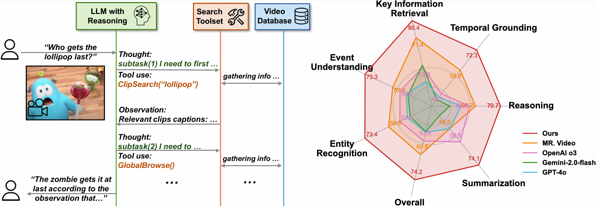

Technical Deep Dive · Long Video · Agentic Search
Deep Video Discovery：把长视频理解变成 Agent 的搜索问题
Deep Video Discovery 没有把整段一小时视频硬塞进一个更长的上下文，而是先把视频离线编译成“全局摘要、片段 caption、原始帧”三层数据库，再让推理模型自己决定搜索、回看和确认的顺序。它真正提出的是一个 video search environment：LLM 负责规划，工具负责取证，原始像素只在需要时被唤起。
0. 一句话结论 #
Deep Video Discovery 解决的是超长视频中“相关证据太稀疏、一次性读完整段太贵、固定搜索流程不适配不同问题”的痛点：它把视频预处理成带时间戳的多粒度数据库，用 OpenAI o3 在 Global Browse、Clip Search、Frame Inspect 和 Answer 之间自主循环；LVBench 上从基础 o3 的 57.1% 提升到 74.2%，加入 transcript 后达到 76.0%，代价是离线 caption/embedding 预处理、多个 API/VLM 调用以及较高的错误传播和成本。
核心 insight：长视频理解的瓶颈不一定是模型“看不进去”，而是模型不知道先看哪里、看多粗、什么时候回到像素确认。DVD 把这三个决策显式化成 action space，让视觉证据从上下文里的被动 token 变成可以被 agent 主动查询的环境。
raw video V
-> 5 s clips, 2 FPS
-> clip VLM captions + subject registry
-> text embeddings + indexed raw frames
-> {Global Browse, Clip Search, Frame Inspect}
-> LLM observe / reason / act loop
-> answer所以它不是一个新的视频 backbone，也不是一个端到端训练出来的 world model。更准确的说法是：一个由离线视频数据库和推理模型组成的 agentic long-video QA system。
1. 论文定位：不是“看更多帧”，而是“搜索长视频” #
任务设定是 long-form video question answering，主要在多个选择题 benchmark 上验证。输入是一段从几十秒到一小时的视频和问题 $Q$，输出是答案选项；系统内部可以多次查询视频，最后才提交答案。LVBench 是主要实验：1,549 个问题、103 段小时级视频。LongVideoBench、Video-MME Long 和 EgoSchema 用来检查方法是否只对某一个数据集有效。
| 路线 | 如何处理长视频 | 主要问题 |
|---|---|---|
| 长上下文 VLM | 采样大量帧或压缩成视觉 token，一次性输入 | 上下文成本高，稀疏证据会被平均掉，难以回看 |
| 固定 workflow agent | 预先规定“先总结、再检索、再反思”的顺序 | 不同问题需要不同粒度，固定流程会多做无用步骤 |
| 单粒度 frame agent | 只允许 agent 逐帧或按固定窗口查看 | 缺少全局人物/事件关系，搜索空间太碎 |
| Deep Video Discovery | 离线多粒度索引，在线由 LLM 自主组合三种工具 | 前处理和 API 成本高，工具错误会被后续推理放大 |
论文和 MR. Video、VCA、VideoAgent 等方法的关键差异不只在“用了 agent”。更关键的是，DVD 没有规定一条统一的搜索脚本：LLM 可以先做全局浏览，也可以直接检索事件，或者拿到时间范围后立即查原始帧。它把 workflow policy 交给推理模型，而把可见性和检索能力交给工具。
2. 方法总览：先编译数据库，再执行搜索 #

asset/overview.png。- 把原视频 $V$ 均匀切成不重叠片段 $v_i$。论文正文采用 $t=5$ 秒，片段帧以 2 FPS 解码。
- 每个片段送入 VLM，结合 transcript 生成详细 caption，并增量维护 subject registry。
- 对 caption 使用
text-embedding-3-large得到向量，保存时间范围、caption、embedding 和原始帧路径。 - Global Browse 处理视频级上下文；Clip Search 在 caption embedding 上做中粒度检索；Frame Inspect 回到指定时间段的像素。
- LLM 维护交互历史 $H_i$，每轮输出 reasoning、tool action 和 parameters。
- 工具返回 observation，追加到历史后继续决策；LLM 选择 Answer 或到达最大步数时终止。
Video V
-> temporal clips {v_i}
-> frames {f_i} @ 2 FPS
-> VLM caption c_i + subject registry S
-> embedding e_i = Embed(c_i)
-> D = {S, (f_i, c_i, e_i)}
Question Q + history H_i
-> reasoning LLM M
-> A_i in {GlobalBrowse, ClipSearch, FrameInspect, Answer}
-> parameters P_i
-> observation O_i
-> H_(i+1) = H_i + (A_i, P_i, O_i)| 对象 | 形状/类型 | 在实现中的作用 |
|---|---|---|
| $V$ | 原始视频 | 离线解码和必要时的像素回看来源 |
| $v_i$ | 约 5 秒 clip；代码默认 10 秒 | caption 的基本单元 |
| $f_i$ | 帧文件集合，默认 2 FPS | Frame Inspect 的视觉输入 |
| $c_i$ | 字符串 caption | 可读检索文本，也是 Global Browse 的输入材料 |
| $e_i\in\mathbb R^d$ | caption embedding | NanoVectorDB 中的向量检索键 |
| $S$ | subject registry | 跨片段跟踪人物/物体的身份、外观、动作和时间 |
| $H_i$ | 文本消息历史 | agent 的短期工作记忆，而不是可训练的隐状态 |
3. 关键创新点 #
3.1 多粒度数据库：全局、片段、像素各自负责一件事
旧方法为什么不行：把一小时视频均匀采样成一串帧，既保留不了事件关系，也无法保证问题相关的局部细节进入上下文。反过来只保留摘要，又会丢掉“某个人手里具体拿了什么”“两个物体谁先移动”这类需要像素确认的信息。
它怎么改：DVD 将数据库写成
$S$ 是全局 subject-centric 信息，$c_i$ 是片段级自然语言叙述，$e_i$ 用于快速检索，$f_i$ 仍保留原始帧。三层不是同一信息的重复存储，而是把“理解、定位、确认”分开。
为什么有效：大多数问题先需要粗定位，只有少数问题需要视觉细节。检索过程可以先在廉价文本空间缩小时间范围，最后再调用昂贵的 VLM 处理几十帧。
代价/限制：caption 是有损压缩，subject registry 也可能把不同人物错误合并。caption 生成模型的偏差会变成数据库偏差，后面的 agent 即使推理能力很强，也可能检索不到真实证据。
实现细节：frame_caption.py 让每个片段输出 JSON，包括时间、subject_registry 和 clip_description；之后再用一次模型合并各片段的局部 registry。build_database.py 将 caption 批量送进 Azure embedding 服务，向量和时间戳写入 NanoVectorDB。
3.2 Subject registry：解决“同一个人跨片段是谁”的全局问题
旧方法为什么不行：逐片段 caption 往往会把同一个人分别写成“穿蓝衣服的人”“主持人”“左边的人”，后续检索只能命中局部描述，很难做跨时间的身份和事件关联。
它怎么改：caption 模型在处理第 $i$ 个 clip 时接收 $S_{i-1}$，输出当前 caption 和新增/更新的 subject 信息：
每个 subject 记录 name、appearance、identity、first_seen 等字段，最终通过 merge prompt 得到 $S_N$。
论文与代码的差异：论文正文把它写成逐片段传递 $S_{i-1}$ 的 progressive registry；当前仓库的 frame_caption.py 则让每个 clip 先独立输出局部 registry，再由 merge_subject_registries() 做一次全局合并。也就是说，公开实现并没有完全复现论文公式里的在线 registry 传递，这一处应标记为【不确定】。验证方式是检查 caption prompt 是否包含上一片段 registry；当前版本的 prompt 只有 transcript 和输出 schema。
为什么有效：这是一个非常轻量的跨片段记忆。它不要求每个 frame 做显式 tracking，却为 Global Browse 提供了“谁在视频里出现过、什么时候出现、做了什么”的全局索引。
代价/限制：它是语言层的实体记忆，不是几何跟踪。外观变化、遮挡或多人相似时容易 merge 错。论文没有报告 subject registry 的独立准确率，因此它对最终分数的贡献不能单独量化，标记为【不确定】。验证方式是释放 registry ablation：固定所有 caption 和工具，只移除 $S$，比较实体识别与跨时间问题。
3.3 三种工具：让检索粒度成为 action space
旧方法为什么不行：固定的“先摘要、再检索、再回看”流程会对简单问题过度搜索，也会在需要先理解全局的人物关系时过早进入局部。
它怎么改：动作空间定义为
- Global Browse：输入原始问题，先从 caption 中找相关片段，再由 VLM 根据这些片段生成带 subject registry 的全局回答。它更像“地图”。
- Clip Search：输入 agent 合成的 event description，计算 query embedding 与所有 $e_i$ 的 cosine similarity，返回 top-$k$ 片段和时间戳。默认 $k=16$。
- Frame Inspect：输入时间范围和自由问题，从范围内加载原始帧；超过 50 秒时最多均匀采样 50 帧，再由 VLM 做开放式 VQA。它更像“证据确认”。
代码现实：论文文字还描述了 event-centric global summary 可以从全视频均匀采样帧生成；当前仓库的 global_browse_tool() 实际通过 embedding 检索最多 GLOBAL_BROWSE_TOPK=300 条 caption，再把按时间排序的文本交给 VLM。它因此是“caption-based global browse”，不是每次调用都重新扫完整原始视频。
为什么有效：全局浏览提供语义先验，片段搜索提供高召回的时间定位，帧检查负责把 caption 里的猜测落到像素。工具之间形成的是互补，而不是简单叠加。
代价/限制：每个工具都有自己的误差：Global Browse 可能只看到检索到的片段，Clip Search 受 caption 词汇覆盖限制，Frame Inspect 可能在采样帧中漏掉短动作。更重要的是，agent 会把工具输出当作 observation；一旦某个 observation 错了，后续 reasoning 可能沿错误方向继续。
3.4 Chain-of-query：检索不是一次 top-k，而是逐步改写查询
旧方法为什么不行：用户问题通常不是一个可直接向量检索的事件描述。例如“最后谁把糖果给了谁”需要先知道人物、物体和时间顺序，原问题直接 embedding 很可能召回很多表面相似的片段。
它怎么改：agent 根据当前历史合成 $\hat Q_i$，反复调用 Clip Search：
这里 $g_M$ 不是额外训练的 query encoder，而是推理 LLM 的查询改写能力：上一轮结果暴露了新的人名、物体、地点或时间约束，下一轮搜索再把这些词带回数据库。
为什么有效：它把一次困难的检索拆成了“提出假设、观察结果、收紧约束”的过程，和 deep research 中的多轮搜索相似。
代价/限制：如果数据库根本没有正确 caption，反复改写只会在错误邻域里搜索。论文把连续三次 Clip Search 归为 Clip Search Trap，这是一个明确的失败模式。
3.5 自适应 ReAct 循环：推理模型本身就是 workflow policy
旧方法为什么不行：固定程序能保证流程完整，但不能根据问题难度分配计算。论文比较发现，VideoAgent 风格的手工 workflow 即使平均执行 11.1 步，LVBench 也只有 70.2%，而 DVD 平均 7.3 步达到 74.2%。
它怎么改：每轮让 LLM 对历史做 reason，再选择 action 与参数，工具返回 observation 后把完整交互追加回历史。论文故意不规定 Global Browse、Clip Search 和 Frame Inspect 的固定顺序。
为什么有效：模型可以对简单问题“一次全局查询后回答”，对复杂问题走“检索 → 局部回看 → 再检索 → 确认”的路径。消融也显示 Clip Search 是最关键工具：移除它，准确率下降 12.3 个百分点；移除 Frame Inspect 下降 8.4 个百分点；移除 Global Browse 下降 2.9 个百分点。
代价/限制：adaptive 不等于稳定。论文观察到 GPT-4o 在 91.4% 的问题上过早走 Simple Action，平均只有 4.6 步，说明 workflow policy 强烈依赖 reasoning model 的探索性。模型越强，工具调用越合理；但每次调用又增加成本和延迟。
4. 训练和推理流程：它主要训练数据库，不训练 agent policy #
4.1 数据库构建输入与输出
- 输入视频 $V$，可选输入 WhisperX 或已有的 SRT transcript。
- 按时间切 clip 并以 2 FPS 解码帧。论文描述的片段长度是 5 秒；当前仓库
config.py默认CLIP_SECS=10，benchmark 复现使用已经上传好的 caption 数据。 - 对每个 clip 调用 caption VLM，输出结构化 JSON；如果有 transcript，则拼接进 clip description。
- 对所有 caption 调用 text embedding 服务，生成 $e_i$ 并写入向量数据库。
- 保存
subject_registry、时间范围、fps、视频根目录和帧路径。
这部分没有传统意义上的 end-to-end loss。captioning、subject merge 和 embedding 是离线 API/模型调用，结果被缓存为 JSON 和向量库。
4.2 在线推理输入与输出
input: video database D, question Q
state: H_0 = {Q, available actions}
for i = 1 ... N:
reasoning = M.reason(H_(i-1))
action, params = M.call(reasoning, H_(i-1))
if action == Answer: stop
observation = tool(action, params, D)
H_i = H_(i-1) + (reasoning, action, params, observation)
fallback: if N reached, ask M to answer from H_N
output: final answer or multiple-choice option官方 benchmark 脚本将最大步数设为 $N=15$，默认 Clip Search 的 $k=16$，所有帧 resize 到 720p。Frame Inspect 使用最多 50 个均匀采样帧；它不是连续视频模型，而是把若干静态帧和问题发给工具 VLM。
4.3 训练、推理和缓存的真实关系
DVD 的“学习”主要发生在数据库构建阶段，在线阶段是 prompt + function calling。推理模型并没有从 LVBench 的工具轨迹上做 RL 或 SFT；仓库 README 仍把“release evaluation trajectories”列在 TODO 中。因此，系统的搜索策略来自通用 reasoning model 的能力，而不是 DVD 自己学出来的 policy。
代码中的 DVDCoreAgent 会把数据库对象注入工具参数，调用 global_browse_tool、clip_search_tool、frame_inspect_tool，最后通过 finish 抛出停止信号。reproduce/run_benchmark.py 为每个视频初始化一次 agent，再并行处理多个问题。
5. 公式与算法逐行讲解 #
5.1 时间切片：先把连续视频离散成可索引对象
$V$ 是原视频，$t$ 是片段长度，$v_i$ 是第 $i$ 个不重叠窗口，$f_i$ 是该窗口内的帧集合。实现上它们不是 Transformer 内部的 token，而是磁盘上的 JPEG 文件和 JSON 里的时间戳。论文的 $t=5$ 秒与通用仓库默认 CLIP_SECS=10 不同，复现时必须确认使用的是哪一套 caption。
5.2 数据库表示：文本负责搜索，像素负责核验
$S$ 是最终 subject registry；$c_i$ 是片段 caption；$\phi$ 是语言 embedding 模型；$e_i$ 是向量库里的检索键；$f_i$ 保留原始视觉证据。在代码里，preprocess_captions() 按 128 条 caption 一批请求 embedding，init_single_video_db() 把时间起止点、caption 和向量 upsert 到 NanoVectorDB。
5.3 Clip Search：余弦相似度定位时间
$\hat Q$ 是 agent 根据问题和历史合成的事件描述，$k$ 默认是 16。输出不是像素，而是按相关性排序的 caption 与时间区间。代码中检索后再按 time_start_secs 排序，便于 LLM 阅读事件先后。
5.4 Frame Inspect：从多个时间范围采样最多 50 帧
$\mathcal R$ 是 agent 给出的时间范围列表，$F[t_s,t_e]$ 是对应帧集合，$q_{\text{sub}}$ 是局部问题，$o$ 是开放式 VQA 文本。代码会把多个范围展平到一个时间轴上均匀采样，再映射回帧 index；这意味着“最多 50 帧”是所有范围合计，不是每个范围 50 帧。
5.5 Algorithm 1：ReAct 状态转移
$H_i$ 不是一个固定大小的向量，而是不断增长的消息列表。$R_i$ 是 reasoning，$A_i$ 是工具名或 Answer，$P_i$ 是工具参数，$O_i$ 是工具返回的 observation。与视频模型的 latent rollout 不同，这里每一步的“状态”是语言历史；数据库是外部环境，工具调用是 action。
6. 训练与推理细节对齐：真正容易复现错的地方 #
| 项目 | 论文/实验设置 | 代码现实与风险 |
|---|---|---|
| 片段长度 | 正文写 $t=5$ 秒 | dvd/config.py 默认 CLIP_SECS=10；benchmark 依赖已上传数据库。不要拿 demo 默认值解释论文结果。 |
| 帧采样 | 2 FPS，输入 resize 到 720p | 代码用 VIDEO_FPS=2；Frame Inspect 在长范围内最多 50 帧，短范围使用范围内帧。 |
| 数据库 VLM | LVBench 用 GPT-4.1，其他 benchmark 用 GPT-4.1-mini | 通用配置默认 gpt-4.1-mini，需要手动切换并重新生成 caption 才能复现实验。 |
| 推理 LLM | OpenAI o3；另测 o4-mini、GPT-4o、DeepSeek-R1、Qwen3-32B | reasoning model 是最敏感组件；API 版本、prompt 和 function-call 行为都会影响轨迹。 |
| tool VLM | Frame Inspect 也使用 o3 | 表 4 显示换成 GPT-4.1-mini 会下降 3.7 个百分点；不能只替换 orchestrator 而不记录 tool model。 |
| transcript | WhisperX transcript 用于分割引导和 caption 丰富 | 不带 transcript 的 DVD 已达到 74.2%；带 transcript 的 76.0% 不是纯模型改进，而是额外音频信息。 |
| 最大步数 | $N=15$，平均实际约 7.3 步 | config.MAX_ITERATIONS=3 是 demo 默认；run_benchmark.py 显式传 15。直接运行 local_run.py 会得到不同轨迹。 |
| 训练/推理 | 无 agent policy 的 end-to-end 训练 | 离线 caption、embedding 是缓存；在线 function calling 没有公开 evaluation trajectories，无法复现每条搜索路径。 |
| 安全过滤 | Azure OpenAI content filter 会误拦一小部分 benchmark | 论文明确说 o3 baseline 和 DVD 都受影响；需要记录被拦样本、重试策略和分母，否则 accuracy 不可直接比较。 |
训练-推理不一致的核心：这篇没有通常意义的 teacher forcing 或 diffusion sampler mismatch，但存在“离线文本摘要 vs 在线像素确认”的分工不一致。captioning 先把视频压成语言；Frame Inspect 又在需要时重新读取像素。系统性能因此取决于两个模型之间的接口：caption 是否包含可检索词，时间戳是否足够准确，tool VLM 是否能纠正 caption。
还有一个工程陷阱：README 目前列着“Implement MCP server”，但仓库已经有 mcp_server.py。更准确的表述是，文件已经提供了一个粗粒度的 query_video(video_url, question) MCP 包装器，但 README 的 TODO 说明它不应被当成论文级工具轨迹发布或完整 MCP 产品。这里属于代码与文档不同步，复现时应以实际文件为准。
7. 实验复盘：数字很强，但要看清它买了什么 #
7.1 主结果
| 方法 | LVBench | LongVideoBench Long | Video-MME Long 无字幕 | EgoSchema Val |
|---|---|---|---|---|
| OpenAI o3 | 57.1 | 60.6 | 64.7 | 63.2 |
| MR. Video | 60.8 | 61.6 | 61.8 | 73.0 |
| Deep Video Discovery | 74.2 | 68.6 | 67.3 | 76.6 |
| DVD + auxiliary transcripts | 76.0 | 未报告 | 未报告 | 未报告 |
LVBench 上相对 MR. Video 提升 13.4 个百分点，相对裸 o3 提升 17.1 个百分点。LongVideoBench 的 Long 子集提升 7.0 个百分点，Video-MME Long 上超过 MR. Video 5.5 个百分点，EgoSchema 超过论文引用的约 76% human-level accuracy 1 个百分点。这里的正确解读是：同一个 reasoning LLM 加上可检索视频环境后，能显著超过它直接看视频的模式。
7.2 消融是否证明了结论
| 消融 | LVBench（带 transcript） | 读法 |
|---|---|---|
| 完整 DVD | 76.0 | caption VLM 4.1、reasoning o3、tool o3 |
| reasoning o4-mini | 70.2 | 推理能力和探索行为很关键 |
| reasoning GPT-4o | 62.3 | 更容易过早结束，不能只看通用 VLM 名气 |
| database 4.1-mini | 71.9 | caption 质量有影响，但不是最大瓶颈 |
| tool 4.1-mini | 72.3 | 局部 VQA 质量也会影响最终答案 |
| 无 Global Browse | 69.0 | 下降 2.9 |
| 无 Clip Search | 59.6 | 下降 12.3，是最大单项损失 |
| 无 Frame Inspect | 63.5 | 下降 8.4，说明像素确认不是装饰 |
消融总体支持作者的结构性结论：三种粒度缺一不可，Clip Search 是召回的骨架，Frame Inspect 是精确性的来源，Global Browse 负责建立全局地图。不过，表格没有把每个工具的调用成本、平均 token、VLM frame 数、端到端 latency 一并报告，因此“更高准确率”与“更高资源预算”没有被完全拆开。
7.3 需要警惕的 confound
- 算力和 API 预算不完全公平：DVD 同时使用 caption model、embedding model、reasoning model 和 Frame Inspect VLM；对比的裸 VLM 通常只做一次推理。作者证明了 agent 机制有效，但没有把每题总 API 成本标准化。
- 数据库 caption 是额外的视觉模型先验：caption 可能已经把答案相关内容写进了文本。DVD 的提升同时来自检索策略和离线 VLM 摘要质量，二者的独立贡献仍有耦合。
- benchmark 是选择题：agent 最后只需输出 option letter，检索到的信息不需要生成可验证的自然语言答案。开放式回答、时间戳证据和幻觉率还需要单独评估。
- 工具失败会被隐藏：论文分析了 Frame Inspect Trap 和 Clip Search Trap，但没有公开完整轨迹数据；我们无法统计“检索不到”和“检索到了但推理错误”的比例。
- Azure content filter：部分样本被服务拦截，论文说明影响了 DVD 和 o3 baseline。这个因素会改变有效评测分母，必须在复现报告中单独记录。
8. 可复现清单：先复现数据库，再复现 agent #
- 环境：安装仓库
requirements.txt，准备 OpenAI/Azure OpenAI 的 caption、embedding、orchestrator 和 tool endpoints；视频下载依赖yt-dlp，帧解码依赖 OpenCV。 - 数据：优先使用官方提供的 Hugging Face pre-built captions；从零生成 caption 会重新消耗大量 VLM API 预算。
- 帧设置：论文为 2 FPS，所有输入 resize 到 720p；Frame Inspect 上限 50 帧，时间范围长于 50 秒时均匀采样。
- 分段设置：论文 5 秒；当前通用配置 10 秒。复现论文数字应使用与官方 captions 相匹配的分段，不要只改配置然后复用旧数据库。
- caption schema：每段至少要有
clip_start_time、clip_end_time、subject_registry、clip_description；空 caption 会在 embedding 前跳过。 - 向量库：默认
text-embedding-3-large，维度配置为 3072；caption 以 128 条一批进行 embedding。 - 模型分工：论文主结果是 LVBench caption 用 GPT-4.1，其他 benchmark 用 GPT-4.1-mini，reasoning 和 Frame Inspect 使用 o3；替换任一模型都应重新记录。
- agent budget：benchmark 脚本传
max_iterations=15，Clip Search 默认top_k=16；demo 默认MAX_ITERATIONS=3，并且LITE_MODE=True时只用字幕、移除 Frame Inspect。 - transcript：需要复现 76.0% 时，使用 WhisperX 或官方带 transcript caption；无字幕 74.2% 和带字幕 76.0% 不能混报。
- 停止与解析：选择题评测通过
extract_answer()解析最终 message；最后一轮会强制追加 finish 指令，避免 agent 无限调用工具。
论文没写清楚但通常必须补齐的细节：embedding API 的具体版本和归一化方式、caption VLM 对失败 JSON 的重试与温度、不同工具的每题调用上限、被安全过滤样本的处理、视频下载失败的缓存策略，以及 caption/embedding 是否在所有 benchmark 使用相同 prompt。官方代码能补一部分，但 evaluation trajectories、完整成本和端到端 latency 仍未发布。
最小复现路径：下载官方 LVBench captions → 用 reproduce.prepare_database 改写视频根目录 → 以 2 FPS 准备帧 → 运行 reproduce.run_benchmark.py。不要从 YouTube demo 直接推断 benchmark 结果，因为 demo 的 lite_mode 默认只走 SRT transcript。
9. 可能的改进方向 #
9.1 学习一个视频专用检索器
改动点：用对比学习把问题、caption、帧片段和答案证据对齐，替换通用 text embedding。
预期收益：减少 caption 词汇偏差，改善 Clip Search 的召回，尤其是同义动作、隐含事件和视觉属性。
风险：训练数据可能把 benchmark wording 记住，且检索器变差时 agent 会被错误候选限制。
验证实验：固定 caption 和 o3，只替换 embedding；报告 recall@k、时间 IoU、最终 accuracy、每题调用次数。
9.2 引入 budget-aware tool policy
改动点：为每次工具调用增加预计成本、延迟和信息增益，让 agent 在“继续搜索还是回答”之间做显式决策。
预期收益：保留 DVD 的准确率，同时压低平均步数和 VLM frame 数，减少 Clip Search Trap。
风险：过早停止会重新引入 GPT-4o 的 Simple Action 问题。
验证实验：画 accuracy-cost frontier，比较不同预算下的工具组合和错误类型。
9.3 让每个答案都带可验证证据
改动点：Answer 不只返回选项，还必须返回支持该选项的时间区间和 Frame Inspect 摘要，并增加独立 verifier。
预期收益：区分“检索正确但推理错”和“根本没找到证据”，提升开放式 QA 和人工审计能力。
风险：verifier 可能重复调用 VLM，且时间区间本身不一定涵盖完整因果链。
验证实验：测 temporal IoU、evidence sufficiency、answer faithfulness 与 accuracy，而不只测 option accuracy。
9.4 把 subject registry 升级为时空实体图
改动点：将语言 registry 扩展为带时间、空间关系和动作边的图，例如“人物 A 在 $t_1$ 拿起物体 B，在 $t_2$ 交给 C”。
预期收益：更适合人物关系、事件因果和长时间跨度问题，减少多轮 Clip Search。
风险：图构建错误会产生比文本 caption 更强的错误先验；存储和更新更复杂。
验证实验：在 Entity Recognition、Event Understanding、Reasoning 三类问题上做 registry-only、caption-only、graph+pixel 对比。
9.5 从“视频问答”迁移到 WAM 数据搜索
改动点：把 $c_i$ 从自然语言视频叙述换成 episode/state-action caption：对象、接触、末端位姿、动作阶段、失败原因和时间区间；把 Frame Inspect 换成轨迹窗口检查器。
预期收益：可以用自然语言查询“哪些 episode 在抓取后发生滑落”“哪些片段存在 action/state 不一致”，直接服务数据清洗和 hard-negative mining。
风险：文本 caption 不足以表达精确几何和接触动力学，必须保留原始 RGB、深度、proprioception 和 action chunk。
验证实验：对同一批真机轨迹比较纯向量检索、caption 检索、caption+状态字段检索，在事件召回、时间定位、人工清洗效率和下游 WAM success 上评估。
对 FastWAM / 具身数据系统的启发 #
DVD 和 FastWAM 的核心对象不同：DVD 的 action 是“查询数据库”，FastWAM 的 action 是机器人控制或 world-model rollout。但它们共享一个很值得复用的设计：不要让主模型每次都处理完整历史，而是让一个可查询的外部记忆决定下一次读取什么证据。
robot episode database
-> 低频 episode summary: task / objects / outcome / progress
-> chunk caption: contact / pose / action / failure
-> raw sensor index: RGB / depth / proprioception / action
query: "找出放置时末端先抬高再碰撞的片段"
-> EpisodeBrowse: 找相关任务和失败类型
-> ChunkSearch: 找动作阶段和时间窗口
-> WindowInspect: 回看原始多模态窗口
-> accept / reject / relabel / hard-negative这里的关键不是把 DVD 原样搬进机器人，而是借用它的多粒度证据接口：粗粒度负责召回，中粒度负责定位，细粒度负责核验。对于数据清洗，最终输出不应该只有一个自然语言答案，还应包含时间区间、证据来源、过滤原因和置信度，才能形成可审计的 manifest。
它也提醒我们：agentic search 不能替代好的数据字段。如果 action、state、task progress 没有在 episode 中显式记录，caption agent 只能从画面猜测，后续的 WAM 训练数据会把猜测当标签。
10. 速读备忘卡 #
- DVD 是长视频 QA agent，不是新的视频生成模型或 world model。
- 它先离线构建视频数据库，再在线搜索和回答。
- 数据库包含 subject registry、clip caption、caption embedding 和原始帧。
- 论文的分段设置是 5 秒、2 FPS；代码通用默认是 10 秒，必须区分。
- Global Browse 给全局地图，Clip Search 给时间定位，Frame Inspect 给像素证据。
- LLM 通过 ReAct 循环自主选择工具，不使用手写固定 workflow。
- Clip Search 支持 chain-of-query，查询会根据 observation 逐步改写。
- Frame Inspect 最多均匀采样 50 帧，长范围不等于把所有帧送进 VLM。
- LVBench 74.2%，加 transcript 76.0%；裸 o3 是 57.1%。
- 移除 Clip Search 下降 12.3，移除 Frame Inspect 下降 8.4，说明检索和核验都重要。
- reasoning model 比 caption model 更敏感；GPT-4o 容易过早结束，形成 Simple Action。
- 系统的主要代价是离线 caption、在线多次 API/VLM 调用、错误传播和评测不完全可审计。
- 代码公开了数据库构建和 benchmark 脚本，但没有完整 evaluation trajectories。
- 对 WAM 最可迁移的不是“让机器人调用视频工具”，而是 episode 的多粒度可查询证据层。
主要来源：论文 HTML / camera-ready 版本、官方代码仓库、仓库中的 dvd/build_database.py、dvd/frame_caption.py、dvd/dvd_core.py 与 reproduce/run_benchmark.py。